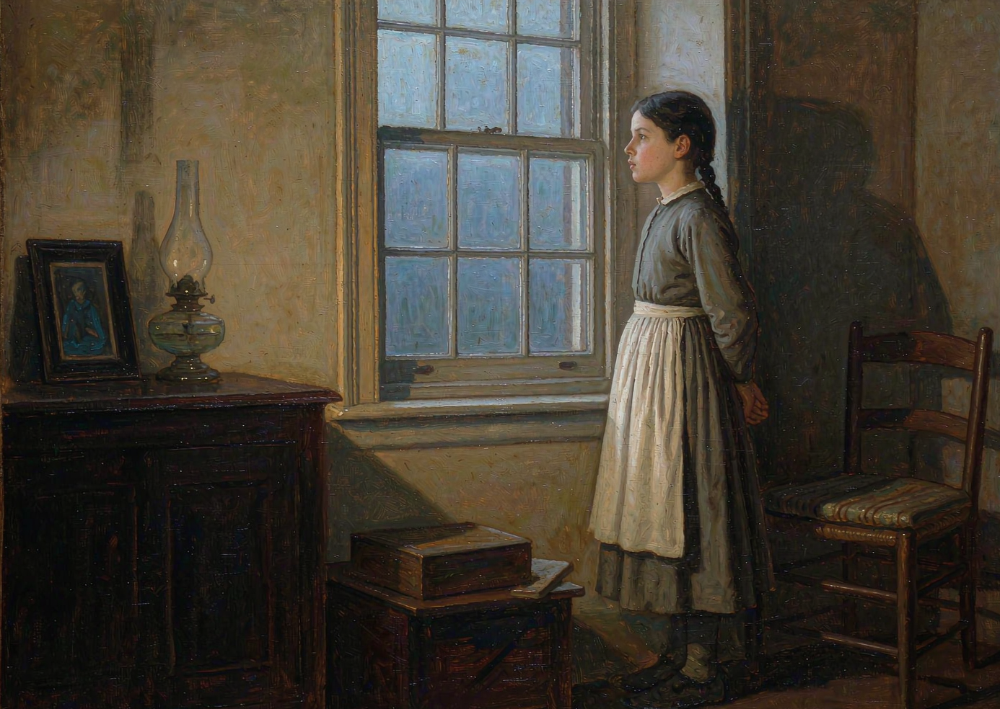
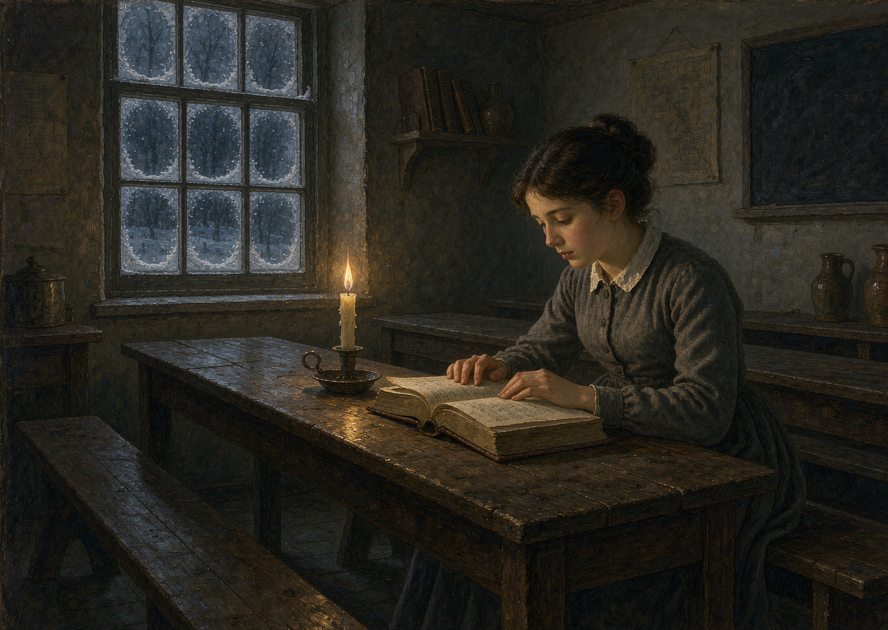
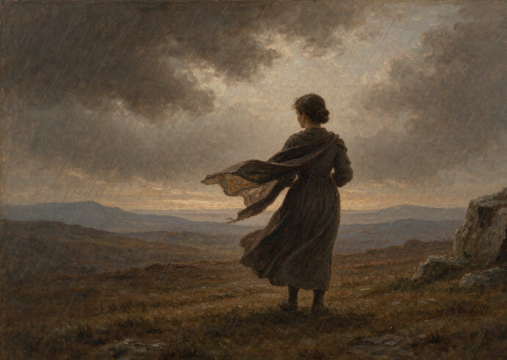
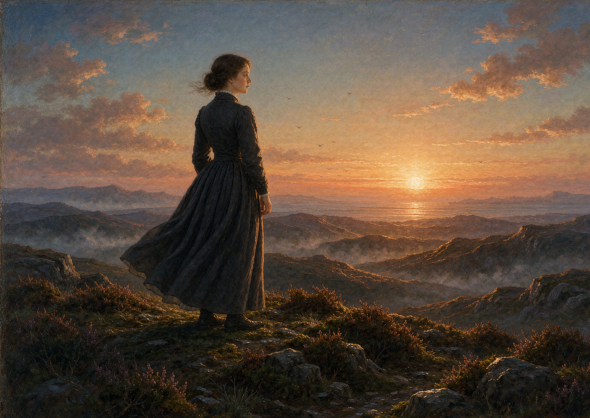
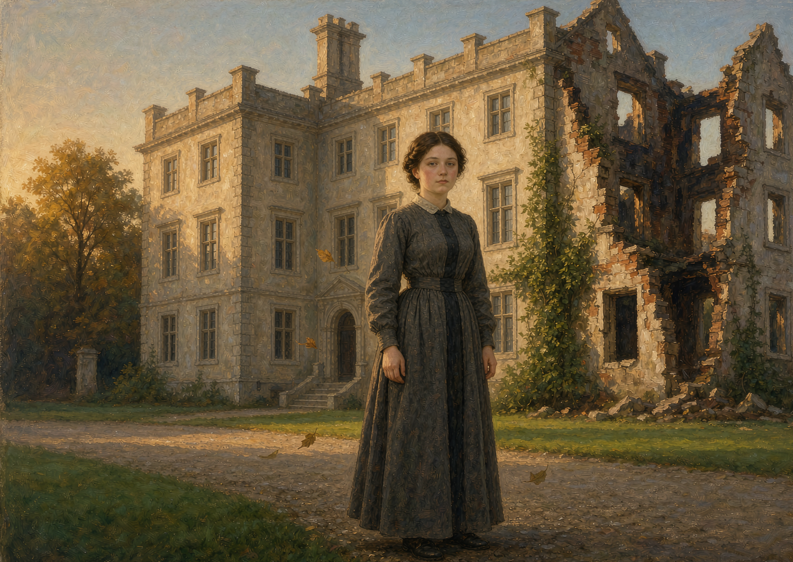

开场视频
22 秒 · AI 动画 · 旁白配音 · 逐句字幕
画面：八幕 AI 动画插画 | 配音：温和沉静女声（1.35 倍速，末句 1.2 倍收束）
五幕人物弧光
自尊 → 坚守 → 离开 → 独立 → 平等

第一幕 · 自尊
寄人篱下的反抗
平凡的简·爱寄人篱下，却从未停止反抗。在盖茨黑德庄园，她被冷眼、被关进红房子，但她始终不肯把屈辱咽下去——反抗，是她保护自尊的唯一方式。

第二幕 · 坚守
可以贫穷，不可以卑微
在罗沃德学校，她靠读书和努力站稳脚跟。她渴望被当作独立的人，而不是被怜悯。她学会了本领，更守住了原则。

第三幕 · 离开
宁可离开，也要守住自我
面对不公与诱惑，她宁可离开也要守住自我。当留下意味着放弃尊严，她选择连夜出走——哪怕前方是风雨荒原。

第四幕 · 独立
靠自己的力量长成完整的人
漂泊中她靠自己的力量，长成完整独立的人。教书、谋生、不依附任何人——尊严从来不是别人给的，是自己挣的。

第五幕 · 平等
灵魂对等的归来
归来的简·爱，不再是被挑选的一方，而是灵魂对等的、站在阳光下的人。
创作方法
从文本到成片的六步流程
定稿旁白：五句 86 字，语速 1.35 倍（末句 1.2 倍），句间停顿 0.2 秒，以听感自然为先。
八幕插画：按剧情顺序生成 8 张油画风横版插画。
人物动起来：每张插画经 AI 图生视频，生成约 5 秒动画，取前 2.8 秒。
首尾帧推拉：每段设置首尾帧缩放关键帧（1.27↔1.33 交替推拉），铺满无黑边。
配音字幕：AI 女声按定稿语速朗读，逐句烧录两行居中字幕。
合成输出：拼接为 22.5 秒 9:16 竖屏成片。
使用工具
全流程免费或低消耗
图像生成 · 油画风插画
图生视频 · AI 动画化
剪映 · 草稿与关键帧
ffmpeg · 渲染合成字幕
Edge-TTS · 免费中文配音